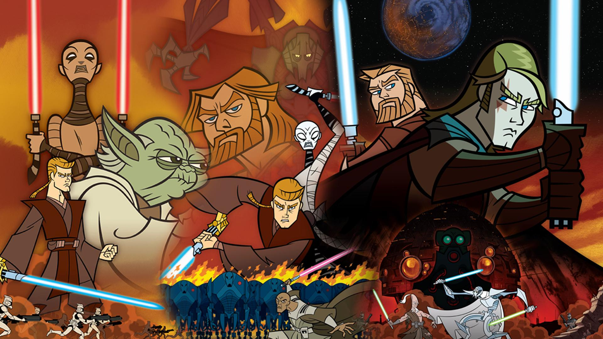

Star Wars: The Clone Wars Episodes
May (the) 4th (be with you), 2025
Mara Solen
One of my favourite pieces of media is Star Wars. I watched the first six movies as a kid after I saw the pod race scene on a display TV
at a Best Buy. I then watched the movies over and over, to the point where I can't count how many times I've seen the original six. I also
watched the Disney sequel trilogy and all the live action shows as they came out once I was older, but it wasn't until I got into the
3D animated Clone Wars series that I really got into Star Wars.
I had seen some episodes here and there as a kid, but watching them in order is a very different experience. Oddly, watching them in order
is not as simple as you'd think. They were released completely out of order, especially in the early seasons, with some series of episodes
covering a single story (called an "arc") jumping back and forth between seasons. Thankfully, there are watch order lists online, and
Lucasfilms has even released an official one, although many fans disagree with it of course.
To celebrate Star Wars day, I decided to make a quick visualization of Clone Wars episodes, focusing on the different arcs and how they
cross over between and across seasons. This is mostly a problem in the earlier seasons, but continues even up until season five. In this
first visualization, each ring of dots is a season, and each dot-like "star" is an episode within that season, spread out evenly within the
ring. The paths connecting the star show the arcs, with the brighter lines indicating arcs that jump around and are not sequential.
(the visualization below is best viewed on a wider screen)
Unlike a lot of shows I've watched, this is one where the animation and writing just gets better over time. The final season, which came
out almost six years after the previous season, is what got me to come back to the show for real, and it was so worth it. This second
visualization shows each season as a sort of wonky lightsaber, with points on the blade showing individual episodes. Their horizontal
position is the time of release and the vertical position is the episode number within the season.
If you enjoy Star Wars, and especially if you enjoy Attack of the Clones or Revenge of the Sith, then this show is a must-watch. Part of
the final season takes place at the same time as RotS, and it adds so much to that movie. Probably the biggest impact of this show is how
much more we get to see Anakin, what his morals and beliefs are, how he interacts with others like Obi-Wan, and how he fell/was pushed to
the dark side. It also introduces one of the best Star Wars characters in terms of character growth: Ahsoka.

The animation at the end of the show is incredible, and I'm so happy that they've continued to use this animation style in other shows like
the Bad Batch since the end of The Clone Wars.

Confusingly, there is also a completely separate 2D animated Clone Wars series. It's much shorter, and in a completely different style, both
in terms of animation and storytelling. It is also a masterpiece and totally worth watching!